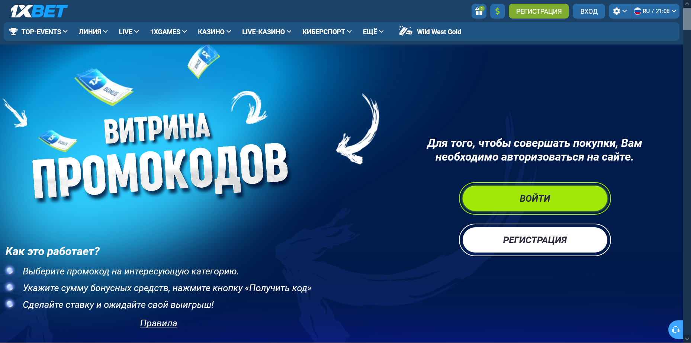

Как использовать промобаллы 1xBet: цены кодов и ограничения витрины
Промобаллы 1xBet, по описанию обзоров, тратятся в витрине промокодов, а не при регистрации нового аккаунта; правила магазина называют списываемую единицу бонусными средствами. 3 октября 2026 года витрина на проверенном зеркале показывала 95 позиций: 19 кодов на бесплатную ставку с ценой от 50 за код и коэффициентом не ниже 1.8, 71 бесплатную ставку в 1xGames и 5 бонусных игр. Курс балла к рублю там не указан, поэтому не приравнивайте балл к деньгам.
Три разных объекта: баллы, витрина и код
Промобаллы 1xBet обозначают единицы программы поощрения; витрина — место выбора варианта их использования; полученный код имеет собственные условия. Регистрационный промокод относится к другой задаче: его вводят в поле «Промокод (при наличии)» при создании аккаунта. На просмотренной витрине коды предназначены для ставок и игр, а для их покупки требуется вход в аккаунт.

В открытой сессии 1xBet страна регистрации по умолчанию — Сейшеллы, валюта — SCR. Поэтому увиденный ассортимент не подтверждает доступность тех же предложений для Москвы. Нельзя обещать конкретный фрибет, сумму или курс обмена баллов для другого региона.
Как начисляются промобаллы 1xBet
Промобаллы 1xBet в каталоге акций 3 октября 2026 года упоминались в нескольких карточках, но общей формулы начисления на просмотренных страницах не было. Карточка «Счастливчик дня» обещала «500 промобаллов каждый день», карточка «Race» — бесплатные промокоды за ставки в Линии и Live, а карточка PROMO — бонусы «за активную игру».
Обзоры баллов 1xBet, опубликованные до октября 2026 года, связывают начисление с активностью ставок, участием в конкурсах и тотализаторе. Сверить эту механику с первичным правилом для московского аккаунта не удалось, поэтому не рассчитывайте ожидаемый баланс по предположению. Сохраните название программы и историю операций.
За какое действие начисляются баллы, когда они появляются, есть ли срок действия и какие операции не учитываются?
Что показывала витрина промокодов 3 октября 2026 года
Витрина промокодов 1xBet 3 октября 2026 года делилась фильтрами на 5 категорий: «Все», «Ставки», «Спорт», «Игры» и «Кибер». Цена на карточке подписана как «Минимум 50 за код» или «100 за игру»; единица списания не названа, а правила магазина говорят о бонусных средствах.
| Группа | Позиций | Цена на карточке | Условие кода |
|---|---|---|---|
| Одинар на любое событие и на 5 видов спорта: футбол, хоккей, теннис, баскетбол, волейбол | 6 | минимум 50 за код | бесплатная ставка с коэффициентом не ниже 1.8 |
| Киберспорт: FIFA, кибер хоккей, теннис, баскетбол, UFC, рестлинг | 6 | минимум 50 за код | бесплатная ставка с коэффициентом не ниже 1.8 |
| Экспресс на любое событие и на те же 5 видов спорта | 6 | минимум 50 за код | 3 события, коэффициент каждого не ниже 1.8 |
| Тото | 1 | минимум 50 за код | бесплатная ставка на любой тотализатор |
| Игры 1xGames: DOTA 21, Dice, 777, Book of Ra и другие | 71 | 100 за игру | бесплатная ставка на сумму 15 SCR |
| Бонусные игры: Wheel of fortune, Memory, Safe, Chest, Lottery | 5 | 50 за игру | сумма выигрыша на карточке не указана |
Экспресс из витрины 1xBet требует минимум 3 события с коэффициентом от 1.8 каждое, поэтому итоговый коэффициент такого купона не ниже 1.8 × 1.8 × 1.8 ≈ 5.83. Шанс пройти экспресс с таким коэффициентом заметно ниже, чем у одинара с коэффициентом 1.8, хотя цена кода одинаковая — 50.
Как потратить баллы в витрине: порядок из правил магазина
Правила «Магазина промокодов» 1xBet, снятые 3 октября 2026 года, описывают программу как лояльность для активных игроков и дают 5 шагов.
- Проверить наличие бонусных средств в разделе Promo.
- Открыть страницу магазина.
- Выбрать промокод на интересующий вид спорта или игру.
- Указать сумму бонусных средств и нажать «Получить код».
- Сделать ставку по условиям полученного кода.
Сумму кода участник 1xBet выбирает сам, но она не может превышать размер бонусных средств. Пример на условных числах: при балансе 120 можно взять один код на сумму от 50 до 120 или два кода по 50; остаток 20 уже не покрывает минимум следующего кода. Тот же магазин предупреждает, что все виды бонусов без исключения отключены для криптовалют.
Промобаллы 1xBet начисляются за активность, поэтому не увеличивайте объём ставок ради баллов: ставки — услуга 18+, а у оператора нет российской лицензии ФНС. Правила ответственной игры важнее накопленного баланса.
Что проверить перед выбором в витрине
| Поле | Проверка |
|---|---|
| Вариант | Что именно выдаётся после обмена: одинар, экспресс, тото или ставка в 1xGames. |
| Цена | Сколько баллов списывается и можно ли отменить выбор. |
| Коэффициент | Минимум для события и число событий в экспрессе. |
| Регион | Доступен ли продукт аккаунту из Москвы. |
| Срок | Как долго действует полученный код или право. |
| Результат | Какие условия использования и вывода возникают после обмена. |
Перед обменом баллов сравните эти поля с другими видами бонусов. Если код дал бесплатную ставку, правила её расчёта описаны в разборе фрибетов.
Если баллы не видны или код не применяется
Баланс баллов может быть недоступен по нескольким причинам, и каждую проверяют отдельно.
- Нет входа в аккаунт: страница кодов показывает ассортимент гостю, но покупка требует авторизации.
- Криптовалютный счёт: правила магазина отключают все виды бонусов для криптовалют.
- Не тот кошелёк: по общим правилам промокоды активируются только в основном кошельке, а использование с другим валютным кошельком аннулирует предложение.
- Повторное использование: каждый промокод может быть ограничен одним использованием на клиента, если не указано иное.
- Регион аккаунта: ассортимент, увиденный в географии SCR, не подтверждён для Москвы.
Если причина не найдена, сохраните историю операции и проверьте раздел начислений; ошибки ввода кода разобраны в материале о проблемах с промокодом.
Частые вопросы
Как использовать промобаллы 1xBet?
Промобаллы 1xBet обменивают в витрине промокодов на код для бесплатной ставки или игры: выбрать позицию, указать сумму не меньше минимума и не больше баланса, получить код и сделать ставку по его условиям.
Сколько стоит код в витрине?
3 октября 2026 года коды 1xBet на ставки стоили минимум 50 за код, ставки в 1xGames — 100 за игру, бонусные игры — 50 за игру. Цены видны в географии SCR и для Москвы не подтверждены.
Можно ли вывести баллы деньгами?
В просмотренных правилах магазина прямой обмен баллов на деньги или фиксированный курс не описан: списание идёт на коды для ставок и игр.
Код из витрины работает при регистрации?
Магазин промокодов 1xBet описывает такой код как код для ставки, а не как регистрационный. Регистрационный промокод относится к отдельному полю при создании аккаунта.
Почему витрина не видна?
Доступ к магазину кодов 1xBet зависит от входа в аккаунт, типа счёта и региона. Покупка требует авторизации; состав предложений в Москве не подтверждён.
Источники и ограничения
Структура материала о промобаллах составлена по семантике и SERP-пакету 2 октября 2026 года для региона Москва: четыре запроса в Google и Яндексе, 54 адреса в выдаче. 3 октября 2026 года сохранены видимый текст и снимки страниц: витрина, правила магазина и общие правила бонусов на указанном пользователем зеркале. Открытая сессия показывала Сейшеллы и SCR; условия для аккаунта из Москвы требуют отдельной проверки. Число позиций посчитано по карточкам в момент снимка.